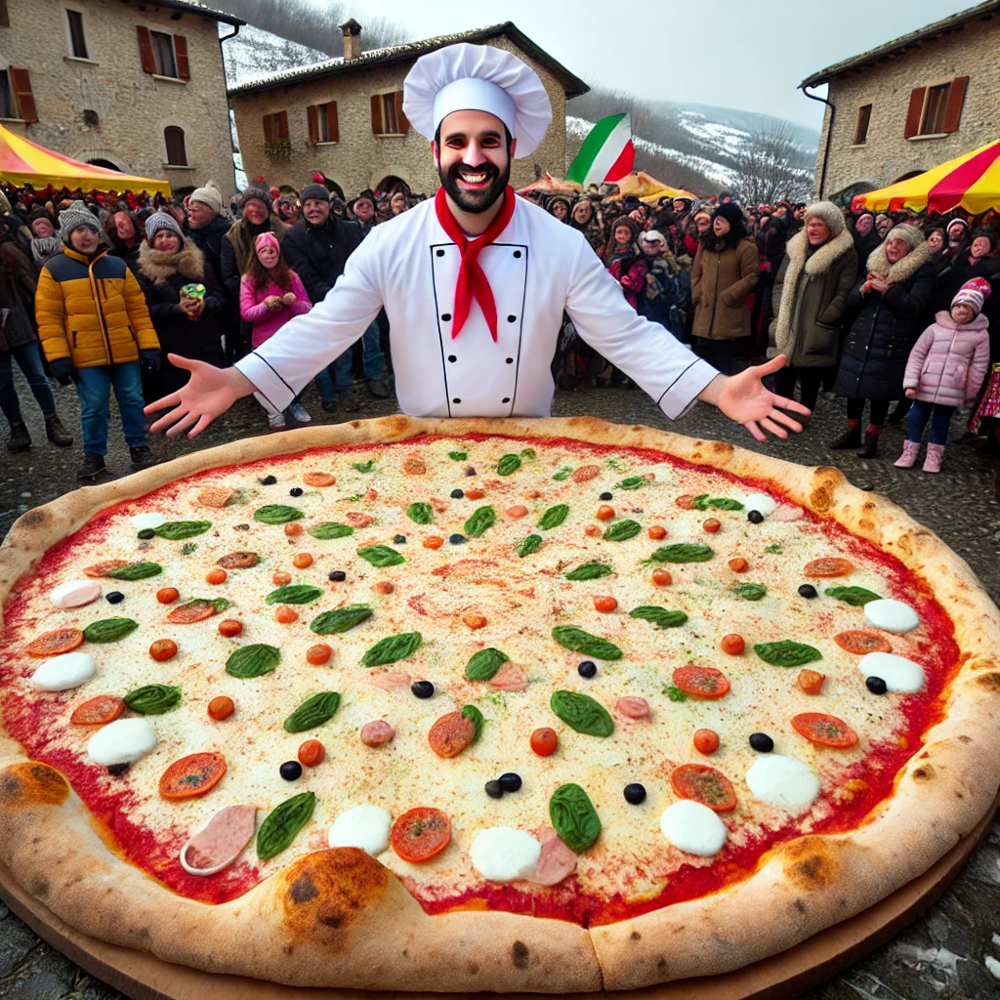
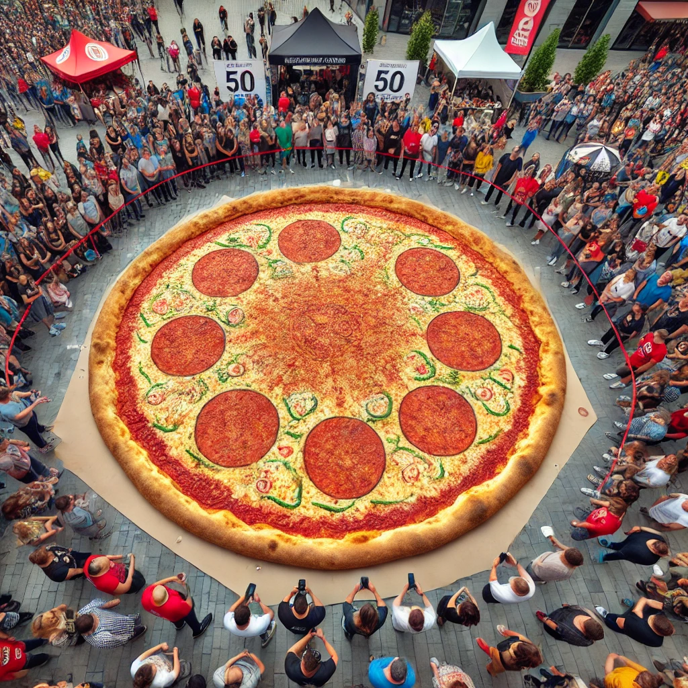
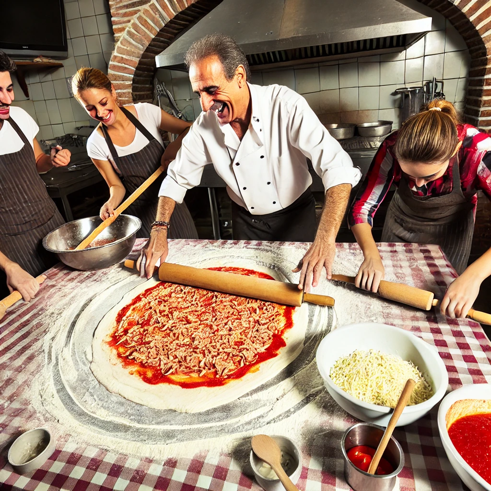

La Pizza Più Grande del Mondo Creata da un Pizzaiolo Italiano
In un piccolo villaggio in Italia, un pizzaiolo ha realizzato un'impresa incredibile: ha creato la pizza più grande del mondo! Questo capolavoro culinario ha lasciato tutti a bocca aperta e ha stabilito un nuovo record mondiale.
Dettagli
La pizza misura incredibili 50 metri di diametro e pesa oltre 20 tonnellate. È stata preparata utilizzando oltre 1000 kg di farina, 800 kg di mozzarella, e 500 kg di salsa di pomodoro, oltre a una varietà di ingredienti freschi e locali. La preparazione ha coinvolto un team di 20 persone e ha richiesto oltre 48 ore di lavoro ininterrotto.
Citazioni
"Questo è un sogno che diventa realtà," ha dichiarato il pizzaiolo Giovanni Rossi. "Volevo dimostrare che la pizza italiana può ancora sorprendere il mondo intero!"